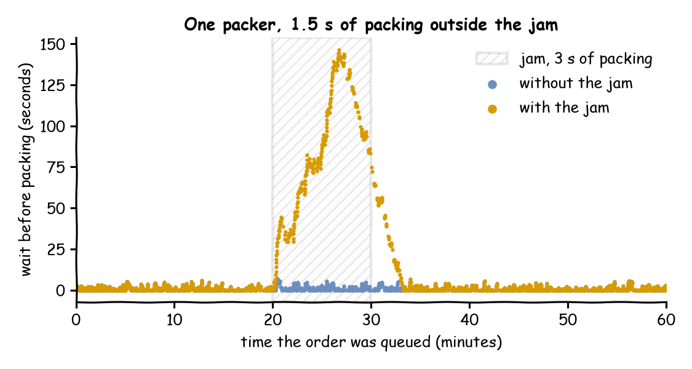

The shop of Changing Demand has one packer, which takes 1.5 seconds to pack an order. An order arrives every 2.5 seconds on average (24 a minute, rate: 0.4). At 20 minutes the packer's label printer jams, and packing takes 3 seconds until the printer is fixed at 30 minutes. This page asks: how long does the jam keep orders waiting after the fix, and how can someone who reads only the records tell what changed?
Decision: how long to keep a delay notice up after a fault on the bench is fixed.
Measures: the mean wait of the orders queued in the 10 minutes of the jam and in the 10 minutes after it, and the records that name the change.
Runs: one run of the hour with the seed 42, a second run of the hour without the jam on the same seed, and a paced run of 5 minutes with the change sent live.
Assumptions: the jam doubles the packing time, and orders arrive at random at the same rate throughout.
What You Will Learn
This page shows how to:
change a parameter during a run with a scenario, and record each change as a label;
measure the effect of a change against a baseline run on the same seed;
send the same change live, from outside the run.
What You Add
This page adds a planned intervention: two scenario steps that change the packing time and publish a label, a ground-truth record of each change. The events go to one file sink and the labels to another. The file sinks need the parquet extra, so install desflow[parquet] (pip install "desflow[parquet]"). Without it, the run logs that pyarrow is required and writes no files. A second run without the jam gives the baseline. A last step sends the same change live from LocalIngress, with no broker.
Record the Jam
A scenario step with a record mapping also publishes a label, as Live Parameters describes. The jam is two steps, each with its own label:
# The jam: 3 seconds of packing from 20 to 30 minutes, each change recordedscenario:-at:20 minpath:Shop.service.packing.valuevalue:3.0record:{intervention:printer_jam}-at:30 minpath:Shop.service.packing.valuevalue:1.5record:{intervention:printer_fixed}
# The jam: 3 seconds of packing from 20 to 30 minutes, each change recordedapp.add_scenario([{"at":"20 min","path":"Shop.service.packing.value","value":3.0,"record":{"intervention":"printer_jam"},},{"at":"30 min","path":"Shop.service.packing.value","value":1.5,"record":{"intervention":"printer_fixed"},},])
# The jam: 3 seconds of packing from 20 to 30 minutes, each change recordedJAM=[{"at":1200,"path":"Shop.service.packing.value","value":3.0,"record":{"intervention":"printer_jam"},},{"at":1800,"path":"Shop.service.packing.value","value":1.5,"record":{"intervention":"printer_fixed"},},]
run_scenario is the SimPy process that applies the steps, started with env.process:
# Each step applies before every other event at its timeenv.process(run_scenario(env,JAM,until=until))
It waits on SimPy's clock with timeout events, as SimPy and desflow describes.
The steps follow the simulation clock, so the jam lands at exactly 20 and 30 minutes on every run, as in Changing Demand. The path Shop.service.packing.value is the value of a constant distribution. Live Parameters shows how to list every path of a model.
Write Events and Labels Apart
The labels go only to a sink with when: labels, for the reasons Live Parameters gives:
egress:# The events, one flat row per event-type:Jsonlconfig:{default_path:events/orders.jsonl}# The ground-truth records only-type:Jsonlconfig:{default_path:labels/labels.jsonl}when:labels
# The events, one flat row per event.add_egress(JsonlStorageEgress(default_path=f"{out}/events/orders.jsonl"))# The ground-truth records only.add_egress(JsonlStorageEgress(default_path=f"{out}/labels/labels.jsonl"),when="labels",)
env.setup_egress([# The events, one flat row per eventJsonlStorageEgress(default_path=f"{out}/events/orders.jsonl"),# The ground-truth records onlyJsonlStorageEgress(default_path=f"{out}/labels/labels.jsonl"),],labels=[False,True],flush_interval=flush_interval,)
labels takes one entry per sink, in the order of the list.
Save the files from Full Files in one folder and run the commands there: desflow run live_changes.yaml, python live_changes.py or python live_changes_low_level.py. Each sink writes one file per batch, such as labels/labels_1a2b3c4d.jsonl. The YAML file writes events/ and labels/ in the folder where you run it, and the scripts write below live_changes_output/. A second run in the same folder adds new files beside the old ones, so start each run in an empty folder. The run writes these two labels. --stdout prints the run's records as JSON lines instead of writing the files, so grep shows the labels without a file to open. In the builder and the low-level API, ConsoleEgress(format="json") as the sink prints the same lines:
path, old and new say what changed and by how much, and label says why. Records and Telemetry lists every field.
Measure Against a Baseline
The labels say when the packing time went back to 1.5 seconds, but not when the orders stopped waiting longer because of it. To measure that, run the hour again without the jam, on the same seed, and compare the waits. Each order's wait is its started time minus its queued time, read from the event files:
defread_rows(folder:Path)->list:"""Every row of every JSONL file the sink wrote to folder."""return[json.loads(line)forpathinsorted(folder.glob("*.jsonl"))forlineinpath.read_text().splitlines()]defwaits(out:Path)->dict:"""The wait of each order, by the time it was queued, in seconds."""queued,started={},{}forrowinread_rows(out/"events"):ifrow.get("status")=="queued":queued[row["instance"]]=row["sim_ts"]elifrow.get("status")=="started":started[row["instance"]]=row["sim_ts"]return{queued[i]:started[i]-queued[i]foriinstarted}defmean_wait(by_time:dict,start:float,end:float)->float:"""The mean wait of the orders queued from start to end, in seconds."""window=[waitforat,waitinby_time.items()ifstart<=at<end]returnsum(window)/len(window)
The Builder and Low-level scripts run both hours and print the comparison. They write the files to live_changes_output/jam/ and live_changes_output/baseline/. The YAML file runs one hour at a time, so the baseline is a copy without the scenario block, and the Builder script reads the two folders with the functions above:
Each command ends with the same five lines, which What You Get and Why shows. The packing time is constant and draws no random numbers, so the jam does not change the arrival gaps the seed draws. Both runs therefore have the same orders at the same times, and each order's two waits can be compared one to one.
Send It Live
A scenario is planned in advance. A change from outside arrives while the run goes on, from an ingress connector. LocalIngress is the ingress connector that needs no broker. It applies each change after a delay in wall-clock seconds, so the run must be paced. Here the run lasts 5 simulated minutes, paced at 200 simulated seconds for each wall-clock second (factor: 0.005, so each simulated second takes 0.005 wall-clock seconds), so it takes 1.5 wall-clock seconds:
# Half a wall-clock second after the start, set packing to 3 secondsingress=[LocalIngress(schedule=[(0.5,"Shop.service.packing.value",3.0)])]
env.setup_ingress(ingress) starts it, and a SimPy process checks the ingress queue every 0.1 simulated seconds.
Half a wall-clock second is 100 simulated seconds at this pace, and packing changes to 3 seconds about then. The exact time depends on how fast the machine runs, so it differs from run to run. The change publishes no label: an ingress update changes the registry and nothing else, so no labels/ folder is created. To keep the ground truth of a live change, the sender must record it itself.
live_changes_live.yaml writes to live/, and the scripts to live_changes_output/live/, so the files stay apart from those of the jam runs. Send it live with desflow run live_changes_live.yaml, python live_changes.py live or python live_changes_low_level.py live. The two scripts print packing after the live change: 3.0 s. Ingress describes the connectors that read Kafka, Redis and PostgreSQL in the same way.
What You Get and Why
The wait of every order over the hour, by the time it was queued, with the jam and without it:

How long does the jam keep orders waiting after the fix? In one run of the hour with the seed 42, the orders queued during the jam wait 80.85 seconds on average, against 1.50 seconds in the run without the jam. The orders queued in the 10 minutes after the fix still wait 11.93 seconds on average, against 1.04 seconds. The last order that waits longer than in the baseline is queued at 1,987.8 seconds, about 3 minutes after the fix, so the delay notice should stay up for about 3 minutes more. The two labels, at 1,200 and 1,800 seconds, tell a reader what changed and when.
label at 1200.0 s: printer_jam, packing 1.5 s to 3.0 s
label at 1800.0 s: printer_fixed, packing 3.0 s to 1.5 s
with the jam: mean wait 80.85 s from 20 to 30 min, 11.93 s from 30 to 40 min
without it: mean wait 1.50 s from 20 to 30 min, 1.04 s from 30 to 40 min
the last order that waits longer is queued at 1987.8 s
label at 1200.0 s: printer_jam, packing 1.5 s to 3.0 s
label at 1800.0 s: printer_fixed, packing 3.0 s to 1.5 s
with the jam: mean wait 80.85 s from 20 to 30 min, 11.93 s from 30 to 40 min
without it: mean wait 1.50 s from 20 to 30 min, 1.04 s from 30 to 40 min
the last order that waits longer is queued at 1987.8 s
label at 1200.0 s: printer_jam, packing 1.5 s to 3.0 s
label at 1800.0 s: printer_fixed, packing 3.0 s to 1.5 s
with the jam: mean wait 80.85 s from 20 to 30 min, 11.93 s from 30 to 40 min
without it: mean wait 1.50 s from 20 to 30 min, 1.04 s from 30 to 40 min
the last order that waits longer is queued at 1987.8 s
During the jam the packer finishes one order every 3 seconds (20 a minute), while an order arrives every 2.5 seconds on average (24 a minute). The queue grows by about 4 orders a minute, so about 40 orders build up in 10 minutes. After the fix the packer finishes an order every 1.5 seconds (40 a minute), 16 a minute more than arrive, so the queue takes a few minutes to clear. The effect of a change therefore lasts beyond the change itself. A label names the cause, and only a comparison with a baseline on the same orders measures the effect, as Output Analysis explains for any two designs.
Key Takeaways
The effect of a change lasts beyond the change: a queue built during a fault takes time to clear.
A label names the cause of a change. Only a comparison with a baseline on the same orders measures its effect.
The same registry path takes a change from a scenario or from a message sent while the run goes on.
# The Live Changes tutorial: a label printer jam, written as a scenario.# Run it with: desflow run live_changes.yaml# The events are written to events/ and the ground-truth records to labels/.simulation:sim_id:Shopfactor:0random_seed:42resources:packers:{current_cap:1, max_cap:1}services:packing:{dist:constant, value:1.5 s}arrivals:orders:{dist:exponential, rate:0.4, spawn:pack_order}tasks:pack_order:service:packingresource:packerspayload:{event_type:order_packed}# The jam: 3 seconds of packing from 20 to 30 minutes, each change recordedscenario:-at:20 minpath:Shop.service.packing.valuevalue:3.0record:{intervention:printer_jam}-at:30 minpath:Shop.service.packing.valuevalue:1.5record:{intervention:printer_fixed}egress:# The events, one flat row per event-type:Jsonlconfig:{default_path:events/orders.jsonl}# The ground-truth records only-type:Jsonlconfig:{default_path:labels/labels.jsonl}when:labelsrun:until:1 h
# The Live Changes tutorial: the same jam sent live, from a LocalIngress schedule.# Run it with: desflow run live_changes_live.yaml# The run is paced at 200 simulated seconds a wall-clock second, so 5 minutes take 1.5 s.simulation:sim_id:Shopfactor:0.005random_seed:42resources:packers:{current_cap:1, max_cap:1}services:packing:{dist:constant, value:1.5 s}arrivals:orders:{dist:exponential, rate:0.4, spawn:pack_order}tasks:pack_order:service:packingresource:packerspayload:{event_type:order_packed}# Half a wall-clock second after the start, set packing to 3 secondsingress:-type:Localconfig:schedule:[[0.5,Shop.service.packing.value,3.0]]egress:# Flush every 60 simulated seconds: at this pace the default of 1 s flushes on a timer# over and over, and desflow warns about it. The files go to live/, apart from the# files of live_changes.yaml-type:Jsonlconfig:{default_path:live/events/orders.jsonl}flush_interval:60-type:Jsonlconfig:{default_path:live/labels/labels.jsonl}when:labelsrun:until:5 min
"""The Live Changes tutorial: a label printer jam, written as a scenario, builder.One packer takes 1.5 seconds to pack an order, and an order arrives every 2.5 secondson average (rate 0.4). From 20 to 30 minutes a jammed label printer slows packing to3 seconds. The events are written to events/ and the ground-truth records of the jamto labels/, and the script prints the mean waits with and without the jam.Run it with: python live_changes.pyWith the argument live, it sends the jam live: python live_changes.py liveWith compare and two folders, it reads two runs that are already written, such as theruns of live_changes.yaml with and without its scenario block:python live_changes.py compare jam baseline"""importjsonimportloggingimportshutilimportsysfrompathlibimportPathfromdesflowimportJsonlStorageEgress,LocalIngress,SimulationContextlogging.basicConfig(level=logging.WARNING)defshop(out:Path,jam:bool=True)->SimulationContext:"""The shop of Changing Demand, writing its events and labels under out."""app=(SimulationContext(sim_id="Shop",factor=0,random_seed=42).add_resource("packers",current_cap=1,max_cap=1).add_service("packing",dist="constant",value=1.5).add_arrival("orders",dist="exponential",rate=0.4)# The events, one flat row per event.add_egress(JsonlStorageEgress(default_path=f"{out}/events/orders.jsonl"))# The ground-truth records only.add_egress(JsonlStorageEgress(default_path=f"{out}/labels/labels.jsonl"),when="labels",))ifjam:# The jam: 3 seconds of packing from 20 to 30 minutes, each change recordedapp.add_scenario([{"at":"20 min","path":"Shop.service.packing.value","value":3.0,"record":{"intervention":"printer_jam"},},{"at":"30 min","path":"Shop.service.packing.value","value":1.5,"record":{"intervention":"printer_fixed"},},])@app.task(service_id="packing",resource_id="packers")defpack_order(task_id:int):return{"event_type":"order_packed"}@app.arrival_loop("orders")deforder_generator(context:SimulationContext):task_id=0whileTrue:order=yieldcontext.wait_for_arrival("orders")context.spawn(pack_order(task_id,entity=order))task_id+=1returnappdefread_rows(folder:Path)->list:"""Every row of every JSONL file the sink wrote to folder."""return[json.loads(line)forpathinsorted(folder.glob("*.jsonl"))forlineinpath.read_text().splitlines()]defwaits(out:Path)->dict:"""The wait of each order, by the time it was queued, in seconds."""queued,started={},{}forrowinread_rows(out/"events"):ifrow.get("status")=="queued":queued[row["instance"]]=row["sim_ts"]elifrow.get("status")=="started":started[row["instance"]]=row["sim_ts"]return{queued[i]:started[i]-queued[i]foriinstarted}defmean_wait(by_time:dict,start:float,end:float)->float:"""The mean wait of the orders queued from start to end, in seconds."""window=[waitforat,waitinby_time.items()ifstart<=at<end]returnsum(window)/len(window)defoutcomes(out:Path)->dict:"""Runs the hour with and without the jam; returns the labels and mean waits."""forjamin(True,False):folder=out/("jam"ifjamelse"baseline")shutil.rmtree(folder,ignore_errors=True)# a run adds files; start emptyshop(folder,jam).run(until="1 h")returncompare(out/"jam",out/"baseline")defcompare(jam_folder:Path,baseline_folder:Path)->dict:"""Reads the two runs' files; returns the labels and mean waits."""result:dict={}by_run={True:waits(jam_folder),False:waits(baseline_folder)}forjam,by_timeinby_run.items():result[jam]={"jam":round(mean_wait(by_time,1200,1800),2),"after":round(mean_wait(by_time,1800,2400),2),}# Both runs meet the same orders, so each order's two waits can be comparedresult["last_longer"]=max(atforat,waitinby_run[True].items()ifwait>by_run[False][at]+0.001)labels=read_rows(jam_folder/"labels")result["labels"]=[(row["sim_ts"],row["label"]["intervention"],row["old"],row["new"])forrowinsorted(labels,key=lambdarow:row["sim_ts"])]returnresultdefreport(result:dict)->None:"""Prints the labels and the mean waits."""forat,name,old,newinresult["labels"]:print(f"label at {at:6.1f} s: {name}, packing {old} s to {new} s")forjam,labelin((True,"with the jam"),(False,"without it")):print(f"{label:>12}: mean wait {result[jam]['jam']:6.2f} s from 20 to 30 min, "f"{result[jam]['after']:6.2f} s from 30 to 40 min")print(f"the last order that waits longer is queued at {result['last_longer']:.1f} s")deflive(out:Path)->SimulationContext:"""The same jam sent live, half a second of wall-clock time after the start."""app=shop(out,jam=False)app.factor=0.005# Half a wall-clock second after the start, set packing to 3 secondsapp.add_ingress(LocalIngress(schedule=[(0.5,"Shop.service.packing.value",3.0)]))# Flush every 60 simulated seconds: at this pace the default of 1 s flushes on a# timer over and over, and desflow warns about itapp.with_batching(batch_size=500,flush_interval=60)app.run(until="5 min")returnappif__name__=="__main__":here=Path("live_changes_output")ifsys.argv[1:]==["live"]:# python live_changes.py live: the jam sent live instead# A run adds files; start emptyshutil.rmtree(here/"live",ignore_errors=True)env=live(here/"live").envpacking=env.registry.get_config("Shop.service.packing").valueprint(f"packing after the live change: {packing} s")elifsys.argv[1:2]==["compare"]:# python live_changes.py compare jam baseline: two runs that are already writtenreport(compare(Path(sys.argv[2]),Path(sys.argv[3])))else:report(outcomes(here))
"""The Live Changes tutorial: a label printer jam, written as a scenario, low-level.One packer takes 1.5 seconds to pack an order, and an order arrives every 2.5 secondson average (rate 0.4). From 20 to 30 minutes a jammed label printer slows packing to3 seconds. The events are written to events/ and the ground-truth records of the jamto labels/, and the script prints the mean waits with and without the jam.Run it with: python live_changes_low_level.pyWith the argument live, it sends the jam live: python live_changes_low_level.py live"""importcopyimportitertoolsimportjsonimportloggingimportshutilimportsysfrompathlibimportPathfromdesflowimport(CapacityConfig,DistributionConfig,DynamicRealtimeEnvironment,DynamicResource,JsonlStorageEgress,LocalIngress,Sampler,SimParameter,run_scenario,)logging.basicConfig(level=logging.WARNING)PARAMS=SimParameter(sim_id="Shop",arrival={"orders":DistributionConfig(dist="exponential",rate=0.4)},service={"packing":DistributionConfig(dist="constant",value=1.5)},resources={"packers":CapacityConfig(current_cap=1,max_cap=1)},)# The jam: 3 seconds of packing from 20 to 30 minutes, each change recordedJAM=[{"at":1200,"path":"Shop.service.packing.value","value":3.0,"record":{"intervention":"printer_jam"},},{"at":1800,"path":"Shop.service.packing.value","value":1.5,"record":{"intervention":"printer_fixed"},},]defpack_order(env,sampler,packers,key,task_id):path_id="Shop.service.packing"defpublish(value):env.publish_event(key,value,task="pack_order",instance=task_id)publish({"path_id":path_id,"status":"queued"})withpackers.request()asrequest:yieldrequestpublish({"path_id":path_id,"status":"started"})yieldenv.timeout(sampler.sample(env.registry.get_config(path_id)))publish({"event_type":"order_packed"})deforder_generator(env,sampler,packers):arrival=env.registry.get_config("Shop.arrival.orders")fortask_idinitertools.count():yieldenv.timeout(sampler.sample(arrival))key=f"orders-{task_id+1}"env.process(pack_order(env,sampler,packers,key,task_id))defrun(out:Path,jam:bool=True,factor:float=0.0,until:float=3600,ingress=None,flush_interval:float=1.0,):# strict=False lets a paced run fall behind the wall clock without stoppingenv=DynamicRealtimeEnvironment(factor=factor,strict=False)# A copy, because a change to the registry changes the parameters it holdsenv.registry.register_sim_parameter(copy.deepcopy(PARAMS))env.setup_egress([# The events, one flat row per eventJsonlStorageEgress(default_path=f"{out}/events/orders.jsonl"),# The ground-truth records onlyJsonlStorageEgress(default_path=f"{out}/labels/labels.jsonl"),],labels=[False,True],flush_interval=flush_interval,)ifingress:env.setup_ingress(ingress)packers=DynamicResource(env,"Shop","packers")ifjam:# Each step applies before every other event at its timeenv.process(run_scenario(env,JAM,until=until))env.process(order_generator(env,Sampler(seed=42),packers))try:env.run(until=until)finally:env.teardown()returnenvdefread_rows(folder:Path)->list:"""Every row of every JSONL file the sink wrote to folder."""return[json.loads(line)forpathinsorted(folder.glob("*.jsonl"))forlineinpath.read_text().splitlines()]defwaits(out:Path)->dict:"""The wait of each order, by the time it was queued, in seconds."""queued,started={},{}forrowinread_rows(out/"events"):ifrow.get("status")=="queued":queued[row["instance"]]=row["sim_ts"]elifrow.get("status")=="started":started[row["instance"]]=row["sim_ts"]return{queued[i]:started[i]-queued[i]foriinstarted}defmean_wait(by_time:dict,start:float,end:float)->float:"""The mean wait of the orders queued from start to end, in seconds."""window=[waitforat,waitinby_time.items()ifstart<=at<end]returnsum(window)/len(window)defoutcomes(out:Path)->dict:"""Runs the hour with and without the jam; returns the labels and mean waits."""result:dict={}by_run:dict={}forjamin(True,False):folder=out/("jam"ifjamelse"baseline")shutil.rmtree(folder,ignore_errors=True)# a run adds files; start emptyrun(folder,jam)by_time=by_run[jam]=waits(folder)result[jam]={"jam":round(mean_wait(by_time,1200,1800),2),"after":round(mean_wait(by_time,1800,2400),2),}# Both runs meet the same orders, so each order's two waits can be comparedresult["last_longer"]=max(atforat,waitinby_run[True].items()ifwait>by_run[False][at]+0.001)labels=read_rows(out/"jam"/"labels")result["labels"]=[(row["sim_ts"],row["label"]["intervention"],row["old"],row["new"])forrowinsorted(labels,key=lambdarow:row["sim_ts"])]returnresultdeflive(out:Path):"""The same jam sent live, half a second of wall-clock time after the start."""# Half a wall-clock second after the start, set packing to 3 secondsingress=[LocalIngress(schedule=[(0.5,"Shop.service.packing.value",3.0)])]# Flush every 60 simulated seconds: at this pace the default of 1 s flushes on a# timer over and over, and desflow warns about itreturnrun(out,jam=False,factor=0.005,until=300,ingress=ingress,flush_interval=60)if__name__=="__main__":here=Path("live_changes_output")ifsys.argv[1:]==["live"]:# python live_changes_low_level.py live: the jam sent live instead# A run adds files; start emptyshutil.rmtree(here/"live",ignore_errors=True)env=live(here/"live")packing=env.registry.get_config("Shop.service.packing").valueprint(f"packing after the live change: {packing} s")else:r=outcomes(here)forat,name,old,newinr["labels"]:print(f"label at {at:6.1f} s: {name}, packing {old} s to {new} s")forjam,labelin((True,"with the jam"),(False,"without it")):print(f"{label:>12}: mean wait {r[jam]['jam']:6.2f} s from 20 to 30 min, "f"{r[jam]['after']:6.2f} s from 30 to 40 min")print(f"the last order that waits longer is queued at {r['last_longer']:.1f} s")